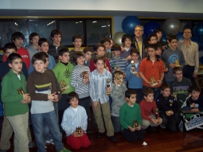

Club de Ajedrez Agustín de Leiza |
| » inicio » socios del club » cto. por equipos » últimos torneos » enlaces |
IV Encuentro de jóvenes ajedrecistas27-12-08No tenemos muchos detalles aparte de la clasificación final del evento. Urtzi ha jugado en la cuarta edición de este torneo que organiza el club de Fomento de Rentería y por el puesto en el que ha quedado (20) se puede decir que ha jugado bien, ya que él con 12 años está en la parte baja de su franja de edad con todo lo que ellos significa. 
Clasificación final (txt) |